운동 전
오늘의 기록을 보고, 다음 루틴까지 준비하세요.
운동일지 메인에서 오늘 요약과 최근 세션, 분할 루틴 진행을 확인하고 바텀시트에서 훈련 분할과 운동 부위를 구성할 수 있어요.
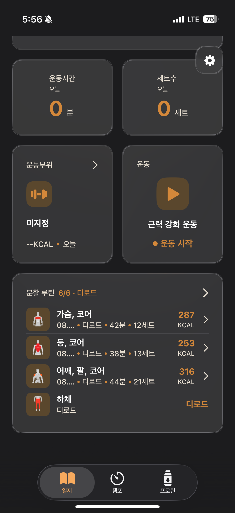
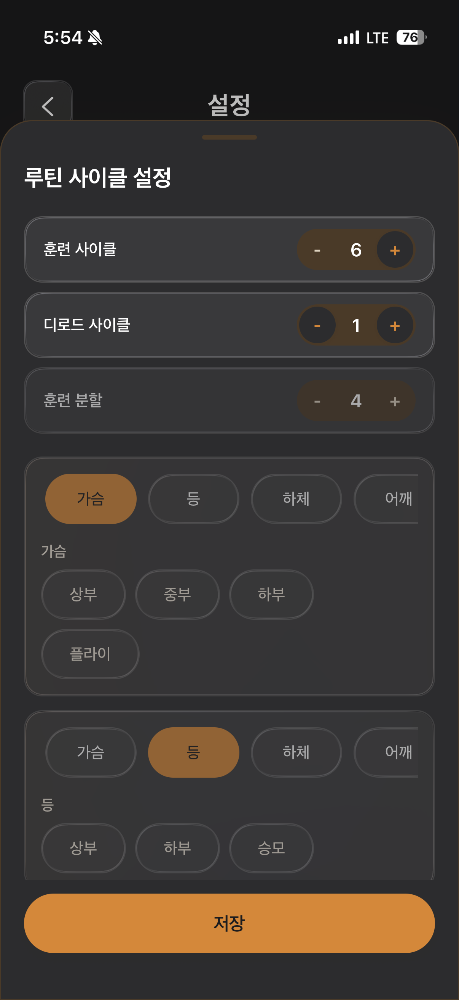
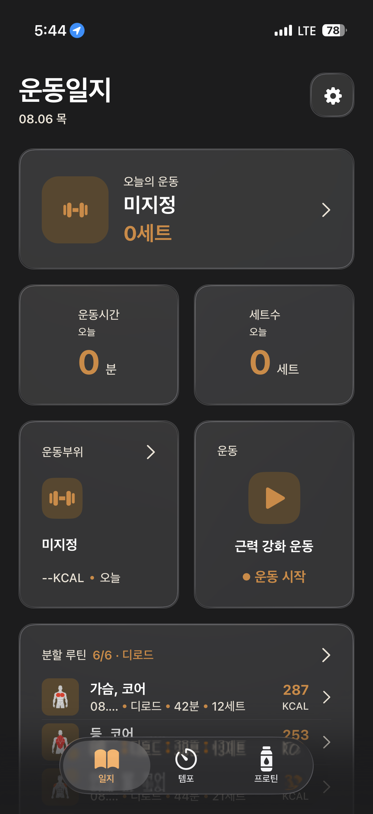
운동일지
운동일지 메인에서 오늘 요약과 최근 세션, 분할 루틴 진행을 확인하고 바텀시트에서 훈련 분할과 운동 부위를 구성할 수 있어요.


루틴과 운동 부위를 빠르게 선택하고 세트와 메모를 바로 남길 수 있어요. 화면을 닫아도 다이나믹 아일랜드와 잠금화면에서 운동 시간과 심박수를 확인하고 일시정지와 종료를 제어할 수 있어요.
운동 중 화면의 러닝 버튼을 누르면 진행 중인 세션 안에서 유산소 기록을 바로 시작할 수 있어요.
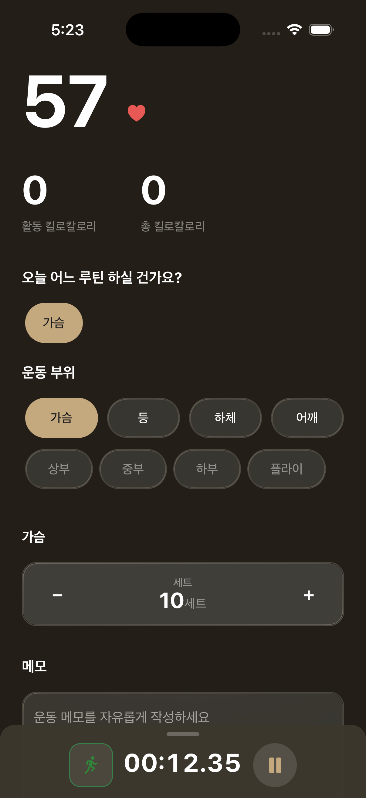
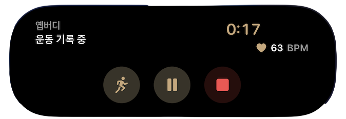
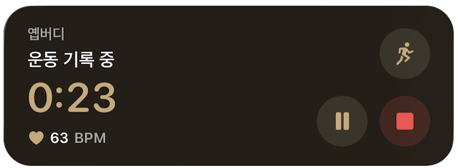
운동 시간과 활동 칼로리, 세트수, 평균 심박수부터 메모와 운동 위치까지 한 화면에서 자세히 확인할 수 있어요.
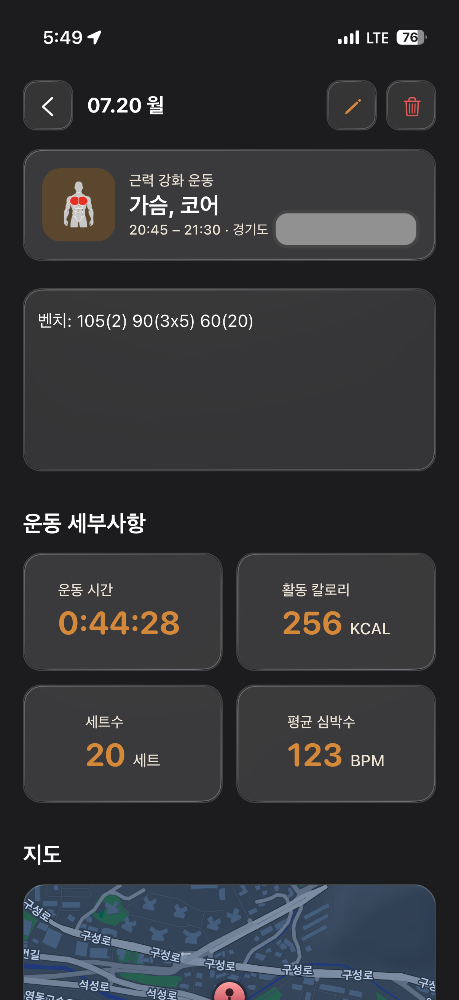
YepBuddy 캘린더에서 날짜별 운동 부위 배지와 추가 기록 수를 확인해, 쌓여가는 운동 흐름을 빠르게 훑어볼 수 있어요.
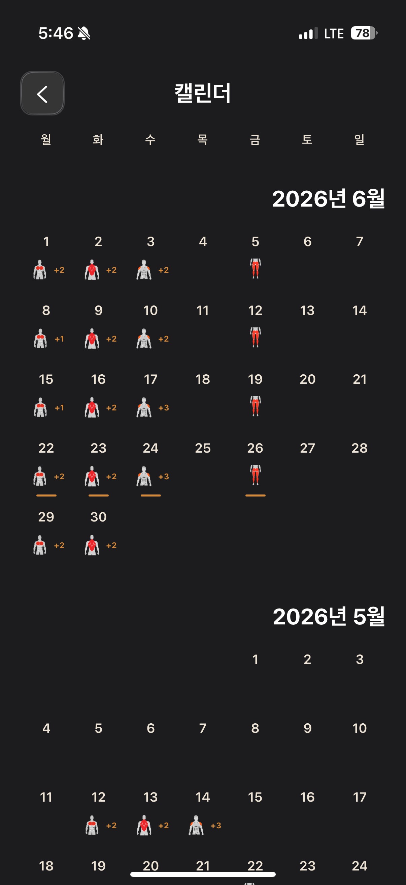
운동한 날짜와 부위 기록을 기기 기본 캘린더에 일정으로 남겨, 평소 사용하는 캘린더에서도 운동 계획과 기록을 함께 볼 수 있어요.
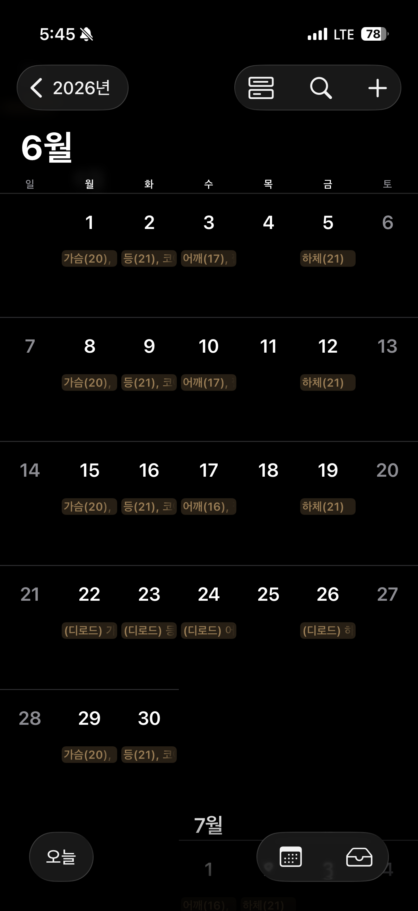
진행 순서와 시간, 횟수, 세트, 휴식을 설정하면 준비 카운트다운부터 마지막 반복까지 자동으로 안내해줘요.
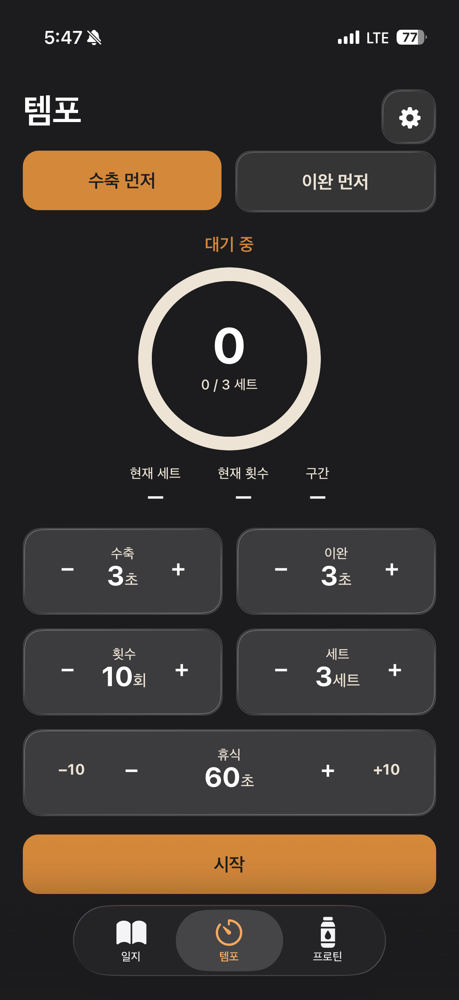
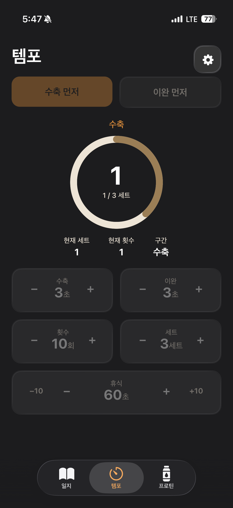
가격 변동 추이를 확인하고, 현재 가격을 저점·중간·고점으로 판단해 구매 시점을 가늠할 수 있어요.
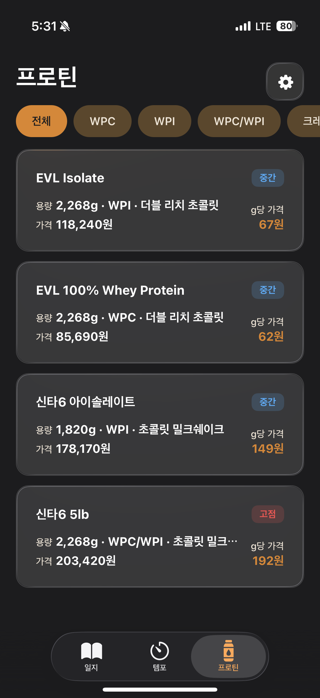